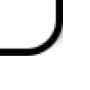
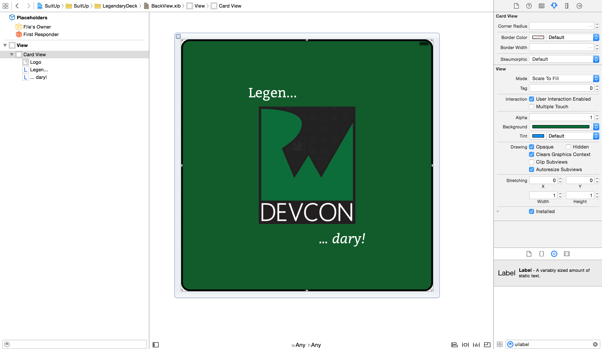

At this point, you have a solid Suit View that you can customize to display the four French suits and a Joker image.
But what about the card itself? What will these suits be displayed on?
Furthermore, the distinctive feature of any deck of cards is the visual design of the back.
You’ve already begun to suit up, so let’s use this lab time to make this deck …dary!
Open up CardView.Swift and you won't see anything but an empty UIView subclass... so let's start here!
First of all, make this a designable class by adding the following class attribute just above the line class CardView: UIView:
@IBDesignable
Add the following code inside the class declaration:
// MARK: Inspectables
@IBInspectable var cornerRadius: CGFloat = 20.0 {
didSet {
layer.cornerRadius = cornerRadius
}
}
@IBInspectable var borderColor: UIColor = UIColor.blackColor() {
didSet {
layer.borderColor = borderColor.CGColor
}
}
@IBInspectable var borderWidth: CGFloat = 4.0 {
didSet {
layer.borderWidth = borderWidth
}
}
Instead of using drawRect(rect:) commands on a UIView like before, you will now be using property observers on the view's CALayer to update and render your drawing code. The CALayer class manages and displays visual contents, so it works quite nicely at design time. The didSet observer on all your inspectable variables will be called immediately after their new value is set in Interface Builder.
Open up Main.storyboard and click on the light gray View inside the View Controller. Change its class to CardView in the Identity Inspector and let Interface Builder update itself. Switch to the Attributes Inspector tab but don't touch anything just yet! You'll notice how your inspectable variables are there, but none of their default values are being rendered. Hmm...
To fix this, switch back to CardView.swift and add the following code at the bottom of the class declaration:
// MARK: IB code
override func prepareForInterfaceBuilder() {
layer.cornerRadius = cornerRadius
layer.borderColor = borderColor.CGColor
layer.borderWidth = borderWidth
}
prepareForInterfaceBuilder() is an awesome new method where you can place code that will only run in Interface Builder at design time. This way, you can create a light setup for your custom view, which in this case is simply setting your default layer values.
This method will be very important in the challenge section, so I will say it again: all code inside prepareForInterfaceBuilder() will only run in Interface Builder at design time, not in your actual app.
Check back on Main.storyboard to see the automatic update, then feel free to change the values as you please :]
Open up CardView.swift and add the following code just above the // MARK: IB code comment:
@IBInspectable var skeumorphic: Bool = false {
didSet {
if(skeumorphic) {
layer.shadowColor = UIColor.blackColor().CGColor
layer.shadowOpacity = 0.33
layer.shadowRadius = 3.0
layer.shadowOffset = CGSizeMake(6.0, 6.0)
}
}
}
In case you miss the pre-iOS 7 days of skeumorphism, you can add a sweet drop shadow to your playing card. Switch to Main.storyboard and turn the Skeumorphic control On. Uh-oh.

That didn't render so well, so build and run the app to see the actual effect.
Live rendering in Xcode 6 is pretty powerful, but some advanced effects are simply too much to compute at design time. Shadows are one such case, with another being UIVisualEffectView instances, so use this example as a reminder that even the best previews in Interface Builder aren't a substitute for the real thing :]
Also, notice how the prepareForInterfaceBuilder() code wasn't called in your actual app :O
Be sure to keep this in mind for the upcoming challenge ;]
With that said, you now have all the tools to build a custom back view in Interface Builder, so let's move on!
Open up BackView.xib and you will once again be greeted by a whole lot of empty... a perfect opportunity to start your visual design from scratch.
Drag a UIView from the Object Library onto the main View. Resize it to fit the entire container, if needed. Change its class to CardView in the Identity Inspector and wait for the visual update, then customize it as you wish. The sample project keeps the default values and changes the background color to r=12, g=93, b=42.
Next, drag a UIImageView onto the Card View. Resize it to 280x280, center it in its parent view, and set its image to Logo with an Aspect Fit Mode.
Finally, you'll be adding two UILabel components to check out Xcode 6's "one last thing". Add the first UILabel above the logo and resize it to 280x50, with the text reading "Legen...", then left-align it with the left edg of the UIImageView. Add the second UILabel below the logo and resize it to 280x50 too, with the text reading "... dary!", then right-align the text with the right edge of the UIImageView.
Now, here comes the magic :]
Try setting a custom font on the UILabel components. For the sample project, I used the Bitter family for both at size 32 with a Regular style for the top label, and an Italic style for the bottom one. Hopefully you are thrilled by this new feature of Xcode 6!
There is plenty of room for artistic freedom in this part of the lab, but for reference purposes, make sure the back of your card looks something like this:

If you have some extra time and are feeling brave, try setting some auto layout constraints and verify them using the assistant editor preview :]
Congratulations, you’ve now uncovered a few more tricks in Xcode 6 and have a solid grasp of how to live-render a dynamic custom control in different situations. You’re ready to continue on to the challenge, where you’ll design a more complex front view to finalize your deck with style!